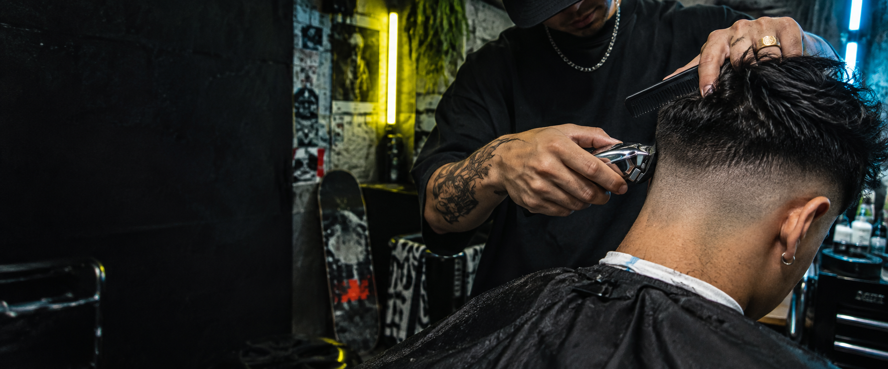

Corte personalizado
Consulta rápida, forma y acabado pensados para ti.

BARBERÍA · STREETWEAR · PSL
Noise Cuts mezcla precisión, calle, música y moda para crear un look que se siente tuyo antes de salir de la silla.
01 · ELIGE TU DIRECCIÓN
Noise Cuts trabaja con todo tipo de clientes. El servicio se adapta a tu cabello, tu estilo y el resultado que quieres.
Consulta rápida, forma y acabado pensados para ti.
Transiciones limpias, detalle y movimiento donde importa.
Líneas, balance y terminación para completar el look.
Servicios, duración y precios finales se confirman directamente con Noise Cuts.
02 · MÁS QUE LA SILLA
Una identidad construida desde el streetwear, el skateboard, el hip-hop y la moda. No para encajar en la barbería de siempre, sino para que cada cliente salga con algo propio.
“Me gusta cortar cualquier tipo de cliente.”— Noise Cuts
03 · ENCUENTRA LA SILLA
Noise Cuts trabaja en la misma ubicación compartida por el concepto de Alex. La silla, horarios y notas de llegada se confirman antes del lanzamiento.
Floresta Centre04 · SIN LLAMADAS PERDIDAS
Envía el día y la hora que prefieres. Esto es una solicitud; Noise Cuts revisa y confirma personalmente.
Ver panel móvil del barbero ↗